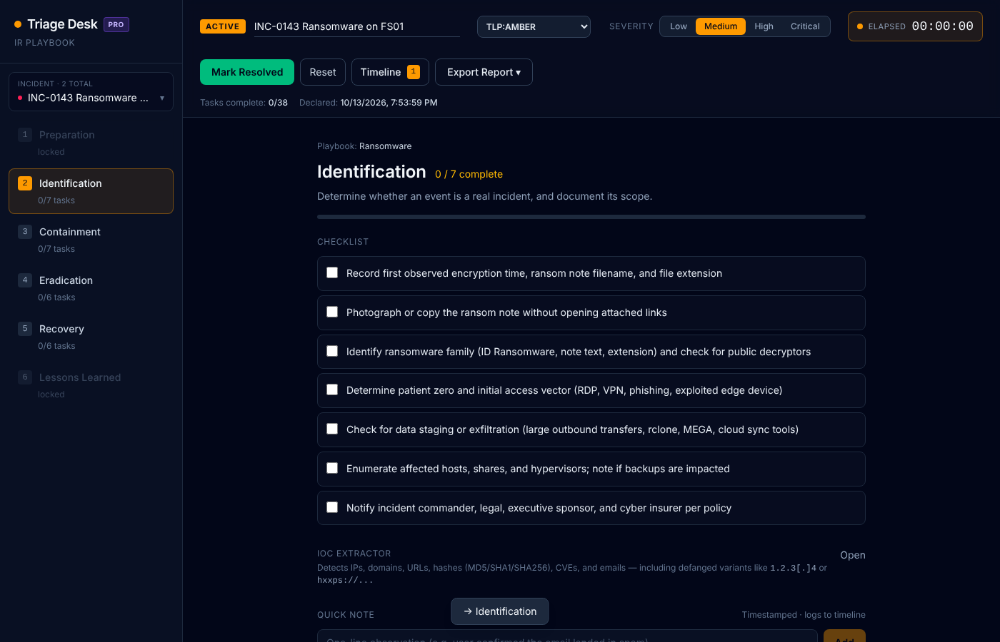

Run every security incident through structured playbooks, with an automatic evidence timeline, IOC extraction, and a report leadership can actually read. No accounts, no cloud, no telemetry — one HTML file.
Runs in any modern browser. Works air-gapped.

Opinionated where it helps, out of the way where it doesn't.
Preparation through Lessons Learned, with phases that lock and unlock as the incident is declared and resolved — so the team works the right phase.
Every checklist item, phase change, severity bump, and quick note is timestamped as T+ from declaration. Your post-incident review starts pre-written.
Paste alerts, logs, or emails. A Rust/WebAssembly engine pulls IPs, domains, URLs, hashes, emails, and CVEs — refanging hxxps and [.] automatically.
Ransomware, phishing, business email compromise, and cloud credential exposure — written by responders, or build your own and share them as JSON.
Export plain text, Markdown, or a print-ready report with your org's branding and TLP 2.0 marking. Print straight to PDF.
Keep concurrent and historical incidents side by side. Back up and restore the whole workspace as a single file.
Buy once. Keep it forever. Updates included for a year.
In your browser's local storage, on your machine only. Triage Desk has no server and makes no network requests. Export a backup file from Settings whenever you like.
Yes. Copy triage-desk.html to the machine and open it. License keys are verified offline with an Ed25519 signature.
Nothing breaks. Your key keeps working forever on every version released during your update period. Renew if you want newer releases.
Each analyst runs their own workspace. Share playbooks as JSON files and incidents via backup files or exported reports.
Yes — see the EULA included with the download for the refund window.